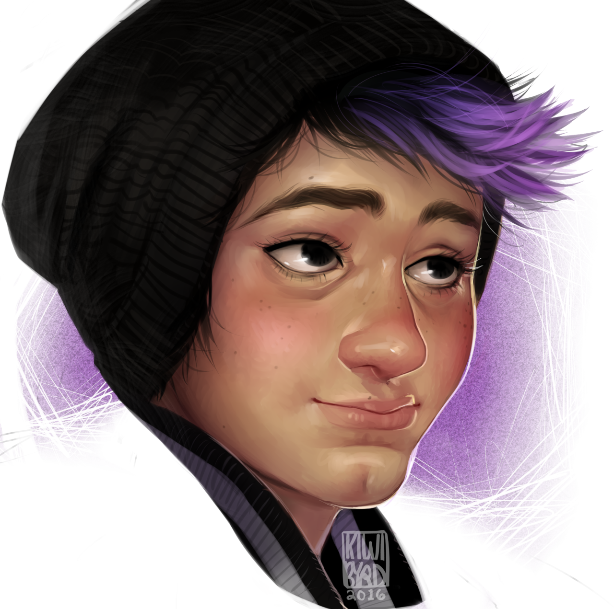
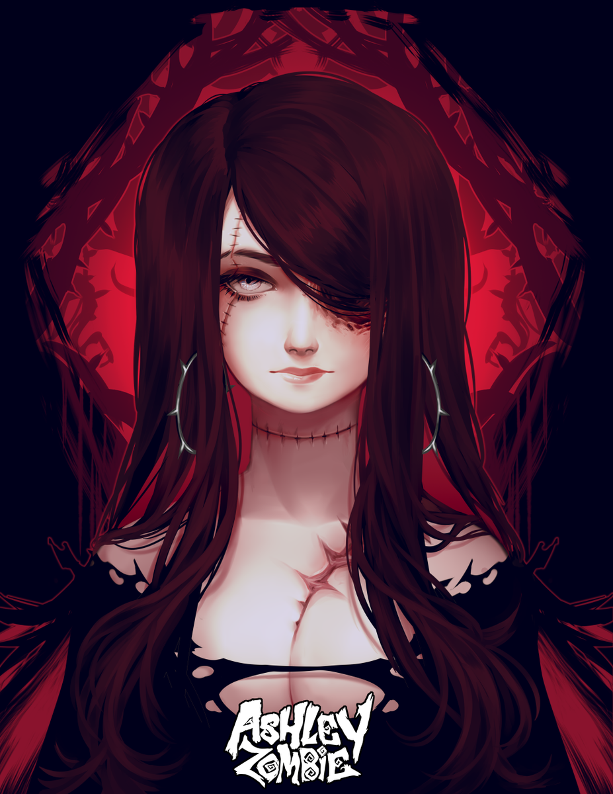

Here are my things
I do the arts stuff
I like kiwi bryd 
and ashley Zombie 
It was hard to find actual pictures of them but these are close enough
note: *I did not draw thses. they are self-portraits of the artist*
As I mentioned before I NEED attention. And so heres a piece of me. i am an artist curaintly taking a life-drawing class where I stare at live nude models which means I stare at boobs and genetals for 2 hours straight. But none the less i still enjoy it. I attend BMCC in NYC and I plan to transfer to New School. Yes there is a collage called New School. I can sew as well i just started about 2 years ago and I'm pretty good at it. I'm also into animation, i havent animationed anything yet but im getting there. I also want to get into sculpting and pottery but i don't know when I'm going to get around to doing in
I'ma bit of a freak in disguise. i like the look of steampunk. Steampunk is victorian couture and industrial design put together